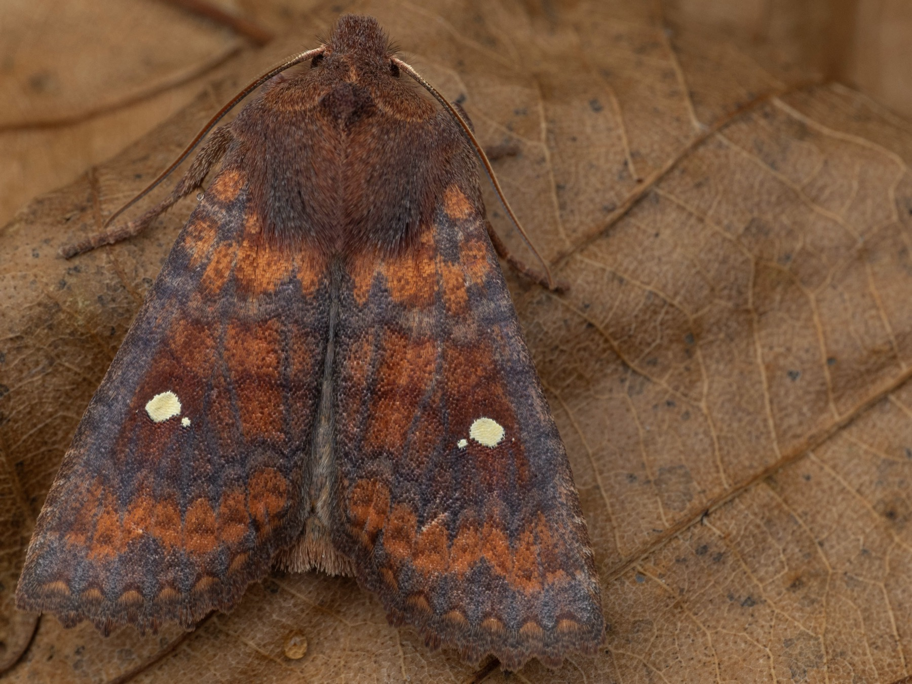

いつ・どこで・どの機材を使ったか
調査日時、地点、光源、トラップ構造、設置条件、天候、気温、月齢、電源状態を記録します。

Recording
試験運用の準備中
現在、一般向けの記録受付はまだ始まっていません。2026年度のライトトラップ構造比較に向けて、記録項目と入力手順を確認しています。
調査への参加を検討している方は、まず調査プロトコルで実験方法と必要な記録を確認してください。フォームの受付を開始したら、このページから入力できるようにします。
このページでお知らせすること：受付開始日、フォームへのリンク、写真の提出方法、地点情報の公開範囲。
Record structure
1回の調査を、調査条件・観察した行動・同定結果に分けて残します。
調査日時、地点、光源、トラップ構造、設置条件、天候、気温、月齢、電源状態を記録します。
飛来・接触・進入・逃出を分け、回収時にトラップ内に残っていた個体数も記録します。
写真、種名または分類群、個体数、標本の有無、同定者、同定の確度を記録し、後から確認できるようにします。
Planned fields
入力画面では、専門的な項目名だけでなく、何を記録する欄か分かる日本語の説明を付ける予定です。
1つの地点で、1つのトラップを一定時間動かした単位です。調査努力量や条件を後から比較できるようにします。
sampling_event_id、site_id、trap_id、light_source、entrance_type、date_start、date_end、weather
調査1回ごとに、観察した行動と分類群別の記録を紐づけます。捕獲数だけでなく、トラップへ入るまでの過程も残します。
arrival_event、contact_event、entry_event、escape_event、taxon_name、count
フォーム公開時には、収集する情報、利用目的、写真・地点情報の扱い、送信後の修正方法を、このページと入力画面の両方に掲載します。